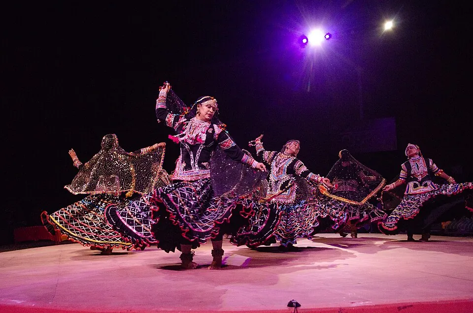

Conferences, lectures and seminars · Arts, crafts and performance · Anthropology · Heritage, museums and conservation
Nagaland's 27th Hornbill Festival runs at Kisama from 1 to 10 December
The state's yearly showcase of Naga tribal heritage opens on Statehood Day at the Naga Heritage Village, alongside a ten-day music festival that, the Chief Minister's adviser says, will favour local talent.


- When
- 1 December 2026 to 10 December 2026
- Where
- Naga Heritage Village, Kisama, near Kohima, Nagaland
The 27th Hornbill Festival will be held from 1 to 10 December 2026 at the Naga Heritage Village in Kisama, about 12 km south of Kohima. The Government of Nagaland organises the festival every year, and it opens on 1 December, Nagaland's Statehood Day. Over ten days it presents Naga heritage and customs, art, music, dance, handicrafts and food.
The festival's high-powered committee, headed by Chief Minister Neiphiu Rio, met at the Heritage Bamboo Hall in Kisama on 13 October, where departments reported on their preparations. Mr Rio said the aim was "a flawless festival" and, according to IANS, asked departments and local communities to work together on roads, power and water supply, security, traffic, cleanliness and parking.
The partners have not yet been named in the reports we have read. ANI reported on 13 October that several countries had shown interest and that the committee, headed by the Chief Minister, would choose the international partners. IANS reported on 2 November that several countries are expected to take part and that one north-eastern state will join as the Partner State.
Alongside the main festival, the Hornbill Music Festival will run for all ten days. It was announced at a press conference led by the Task Force for Music and Arts (TaFMA), whose chairman is Theja Meru. According to Eastern Mirror, it will bring together more than 1,000 musicians and 60 to 70 bands, with events also held in six or seven districts beyond Kisama. Abu Metha, Advisor to the Chief Minister, said public money would go mainly to local musicians rather than costly big-name acts.
Sources
- "We want to make it a flawless festival": Nagaland CM Neiphiu Rio on Hornbill Festival 2026, ANI, 2026-10-13
- Nagaland govt orders statewide social work on Nov 13 ahead of iconic Hornbill Festival, The Hans India (IANS), 2026-11-02
- Hornbill Festival 2026: Toyota Hornbill Music Festival returns, Eastern Mirror, 2026-11-12
Written by Talaash Heritage from the sources above. Spotted an error? Write to talaashheritage@gmail.com and we will correct it on this page.
More from the Heritage desk · More in Arts, crafts and performance · Background guide